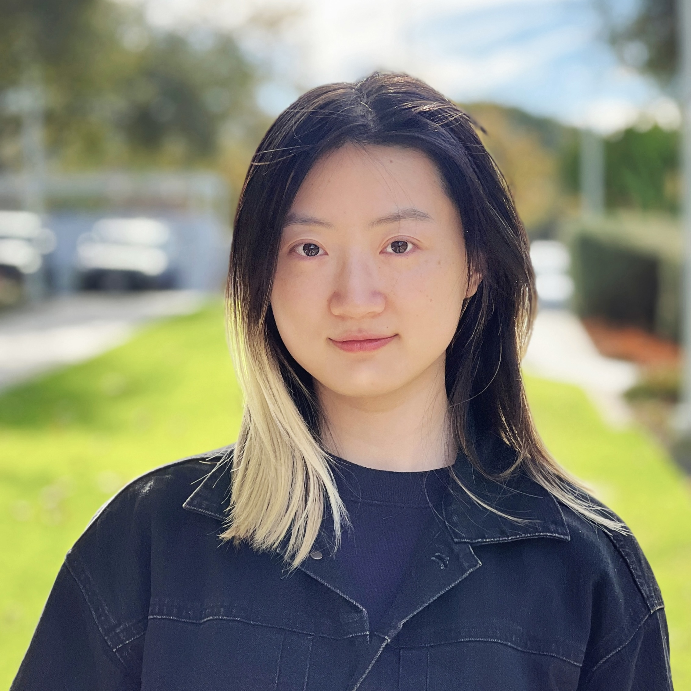

Hi! I am Crystina, currently in my final-year of pursuing my PhD at University of Waterloo. I'm honored and fortunate to be advised by Professor Jimmy Lin. I also had wonderful time interning at Google DeepMind, Cohere, Max Planck Institut für Informatik, and NAVER CLOVA. Prior to joining University of Waterloo, I received my Bachelor's degree in Computer Science at HKUST. I was an exchange student at the University of California, Los Angeles, and the University of Waterloo during my undergraduate.